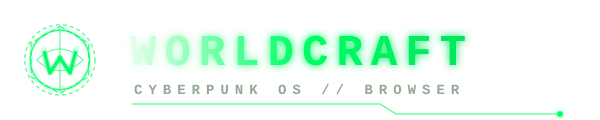

00:00:00
--.--.----
SPEED DIAL // SCHNELLZUGRIFF
OBS STUDIO COMPATIBLE
WORLDCRAFT FORGE // OBS OVERLAY SYNTHESIZER
Generate transparent, reactive HTML/CSS/JS overlays powered by Neural-Link.
OBS SERVER // LOCALHOST:4884
GESPEICHERTE WIDGETS // LIBRARY
OBS BROWSER SOURCE URL:
BEREIT
WORLDCRAFT BROWSER // CYBERPUNK SETTINGS
NEURAL-LINK CORE
INTERNAL TAB
DARSTELLUNG & DESIGN
UI / HOMESCREEN
Homescreen-Hintergrund
Passe das visuelle Erscheinungsbild deiner Cyberpunk-Startseite an.
LIVE-VORSCHAU // HINTERGRUND
DEFAULT
WORLDCRAFT
SUCHMASCHINEN-ROUTING
OMNIBOX UPLINK
Google Matrix
Globales Standard-Webnetz
DuckDuckGo
Privatsphäre & No-Tracking
Brave Search
Unabhängiger Cyber-Index
Microsoft Bing
Cognitive Web-Search
WORLDCRAFT AI (NEURAL LINK)
MULTI-PROVIDER BYOK
Neural-Link Status:
NICHT KONFIGURIERT // STANDBY
Google (Gemini)
gemini-3.8-flash // 2.5-pro
OpenAI (ChatGPT)
gpt-4o // gpt-4o-mini
Anthropic (Claude)
claude-3-5-sonnet // haiku

Local (Ollama)
localhost:11434 // open weights
CORE FAST
AKTIV
gemini-3.8-flash
Niedrige Latenz, Echtzeit-Recherche und reaktionsschnelle UI-Synthese.
CORE PRO
VERFÜGBAR
gemini-2.5-pro
Höchste kognitive Tiefe, komplexe System-Synthese und Deep Coding.
SPRACHE & LOKALISIERUNG
7 REGIONS
Wähle die Anzeigesprache für die Benutzeroberfläche und die automatische Webseitenübersetzung.
Deutsch
DE
English
US / UK
Español
ES
Français
FR
Italiano
IT
Polski
PL
Українська
UK
SCHNELLZUGRIFF & TABS
SPEED & MEDIA
ÜBER WORLDCRAFT & FEEDBACK
RELEASE V1.2.0
[ WORLDCRAFT CORE // V1.2.0 // PROTOCOL STABLE ]
5. FEEDBACK & SUPPORT
Hast du einen Glitch oder Bug in der Matrix entdeckt oder hast Ideen für neue Cyberpunk-Features? Sende dein Feedback direkt an unser Entwicklungsteam.
MVP TESTER FEEDBACK & BUG REPORT
JOTFORM FORMULAR // PROTOCOL ONLINE
WORLDCRAFT BROWSER // DOWNLOAD MANAGER
MATRIX DATA STREAM ARCHIVE & SESSION TRANSFERS
DATASTREAM ARCHIVE
INTERNAL TAB
GESAMT:
0
STREAMING (AKTIV):
0
ENTSCHLÜSSELT & BEREIT:
0
[ DATASTREAM IDLE // KEINE DOWNLOADS VORHANDEN ]